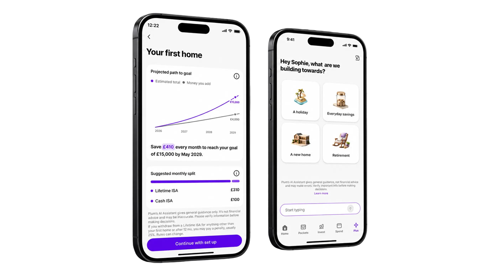
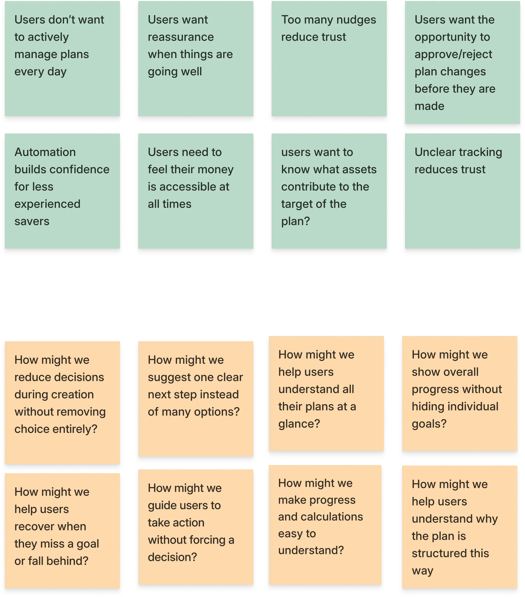
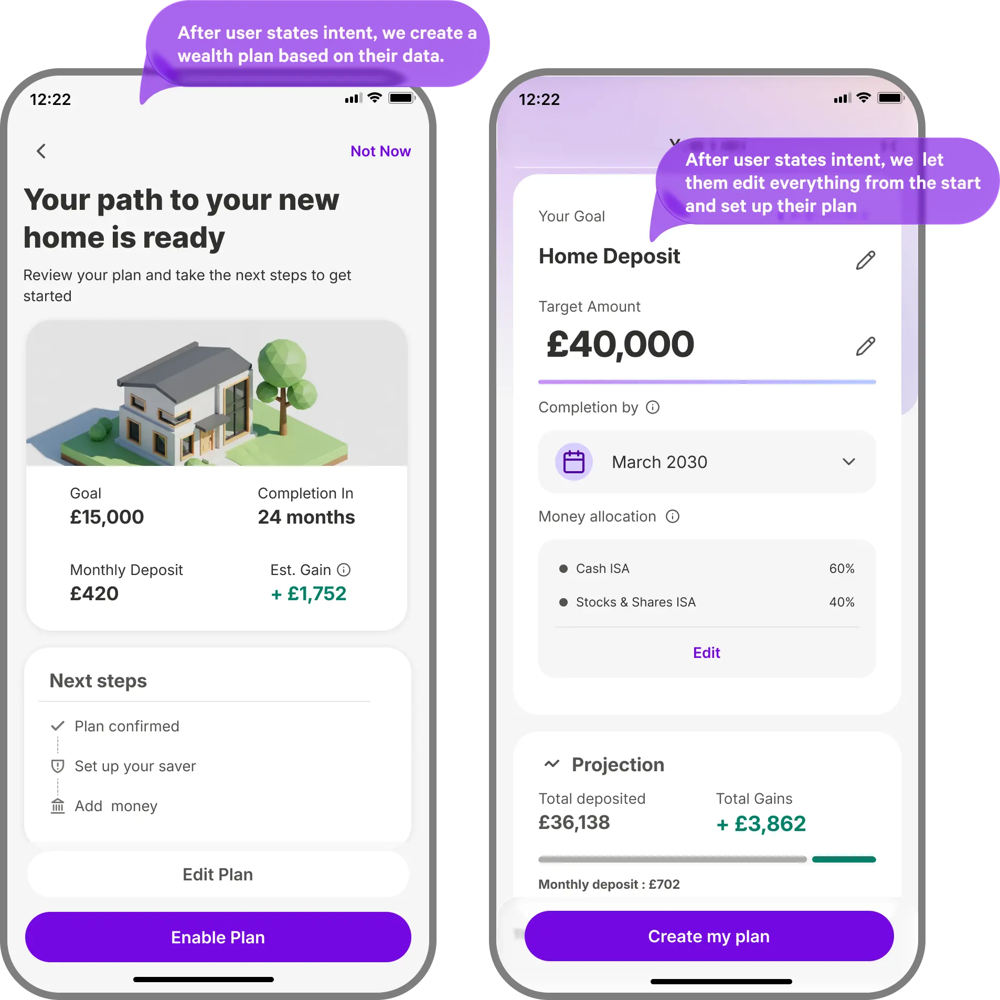
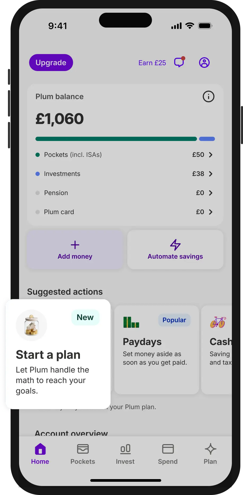
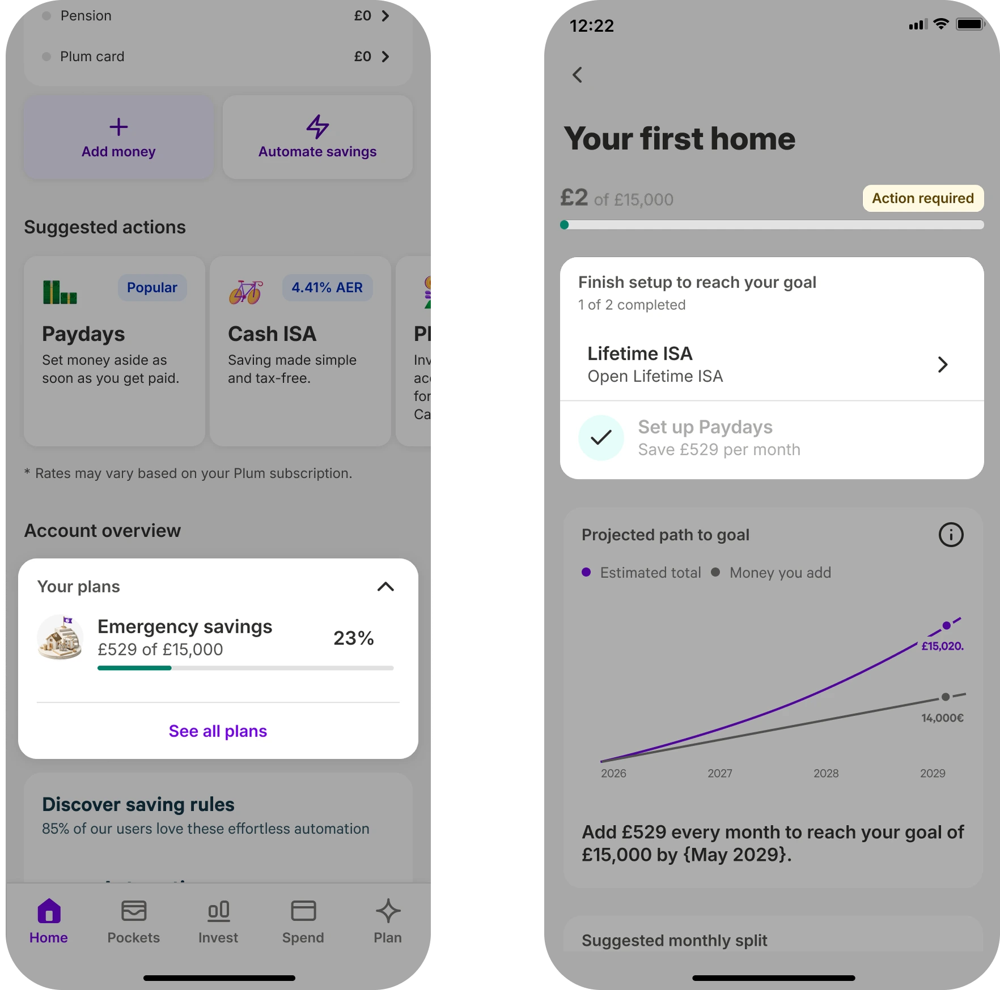
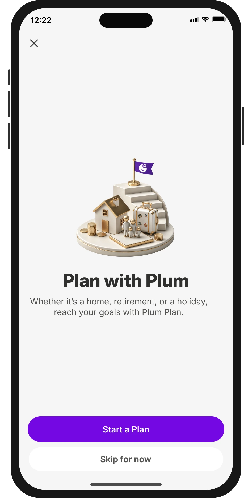

Plum’s AI Wealth Advisor helps users turn a savings goal into a plan. It gives people a lower-pressure way to start financial planning.
Each plan shows how much to save, where to put it, and how it could grow. The core loop is simple: tell it your goal → get a plan → fund it.
The bigger vision is a full wealth advisor inside Plum. One that understands your finances, tracks progress, and guides next steps.
Plan Builder sat behind a generic “Ask Plum” entry point. Most eligible users never knew it existed, and 85% never opened it.
The chat asked too much too soon, and the final plan was easy to miss. As a result, 9 out of 10 users never saw one.
Primary goal. Make plan creation a way in for people who feel shut out of financial advice. Many assume it's only for people with more money. A free, trustworthy plan inside an app they already use reaches them directly.
Secondary goal. Move plan save rate from ~12% to a 30% target. Make plans visible, not buried in chat.
We started with a cross-functional workshop to map the full plan lifecycle, from creation and activation to funding, tracking, and management.
Together, we translated the research into opportunities and aligned on where AI could add the most value.

From those opportunities, we explored two AI-led planning concepts and tested them with 10 participants to understand which approach felt clearer, more trustworthy, and easier to commit to.

People dropped off before a plan even appeared. Too many questions made the flow feel like work. Confusing wording could end the journey.
Source: internal plan creation evaluations, qualitative reviewWe tested two plan concepts with 10 people. Automatic plans felt generic and out of their hands. Editable plans felt safer because users could adjust them.
Source: Wealth Plans concept test, December 2025, n=10Many ruled themselves out of advice. They assumed it was only for people with more money.
Even past advisor clients didn't want a long-term advisor. They wanted help when needed.
Source: Financial Advisor Study, May 2026, n=345 survey plus 8 interviewsBased on what we learned from data and research, we decided to focus the first release on plan discoverability, faster plan creation, and a clearer way for users to track their plan over time.
Why: We believed a clearer Home entry point would increase adoption, because users were unlikely to search for planning behind a generic “Ask Plum” action.
This gave planning a clearer place in the app. Users no longer had to discover it by accident.

Why: We believed fewer, clearer questions would reduce drop-off. So we capped the flow at three questions, clear
We replaced the open chat with a 3-question modal, using suggested answers with a type-your-own option
Why: We believed one AI-generated plan could feel generic. So we showed three plan suggestions instead.
Each suggestion opened into a dedicated plan detail screen. Users could review, compare, and edit before saving.
Why: We believed saved plans needed to stay useful after creation. So we added progress tracking to each plan.
Users could see if they were on track or falling behind. The plan became something they could return to.

Why: We knew product changes alone would not reach everyone. So we supported the redesign with CRM.
This brought first-time users into the new flow.

Honest miss: adoption is still small. Only a few thousand users have a plan. Funded plans outpace saved ones: some skip saving but still complete tasks within 7 days. Plan save rate may be undercounting real impact.
There was a real gap between the vision and what we could build. We only found out how big partway through.
Next time, engineers see the concept before it's final, not after.
Although we improved the goal-first journey, we never validated whether starting with a goal was the right approach.
Next time I'd test whether broader coaching is what people actually want, before building around it.
We wanted to ship too many things at once. That made it impossible to track the impact of any single decision.
Next time I'd push the team to prioritise and stagger releases from the start.
We prioritised plan save rate because the plan was the new experience. But the real win is users starting to put money aside.
Next time, I'd give saving actions more weight alongside plan saves, especially within the first 7 days